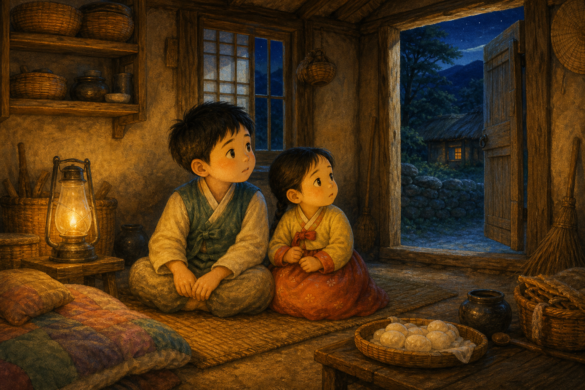
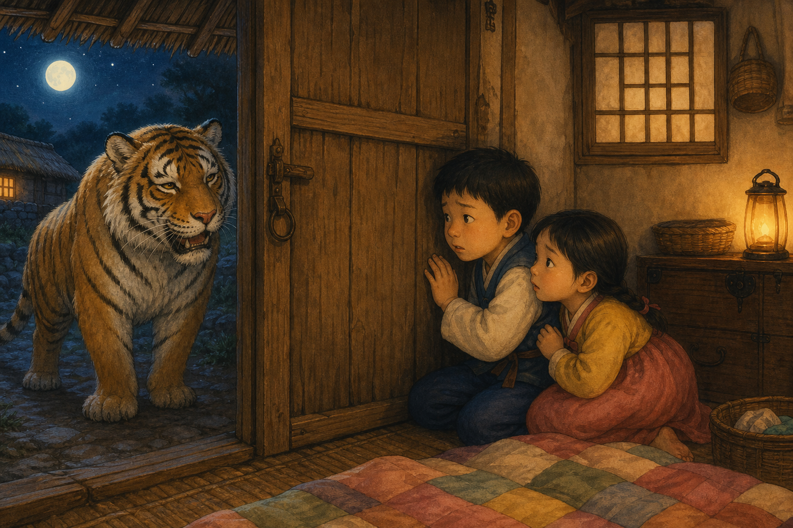
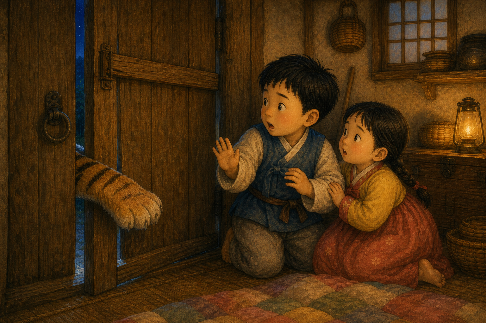
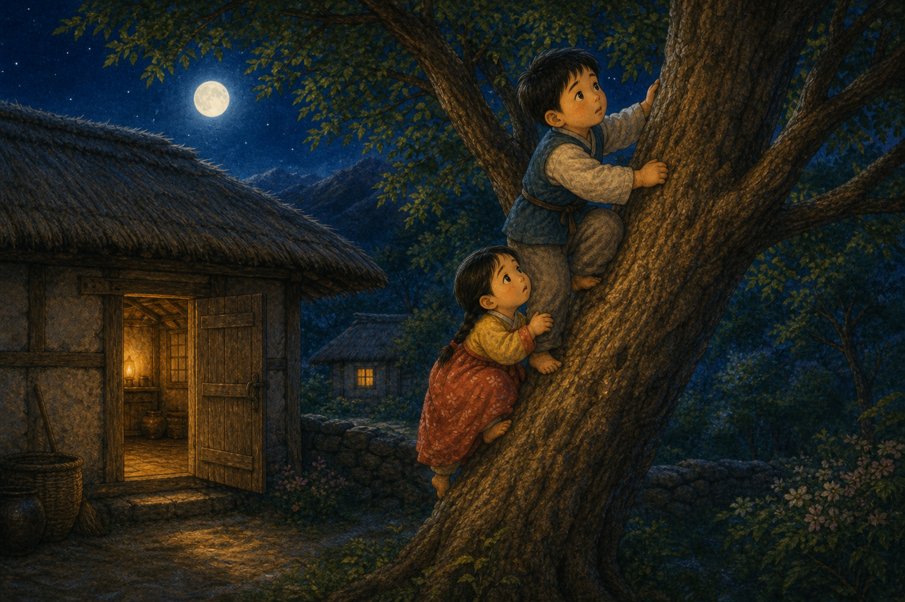
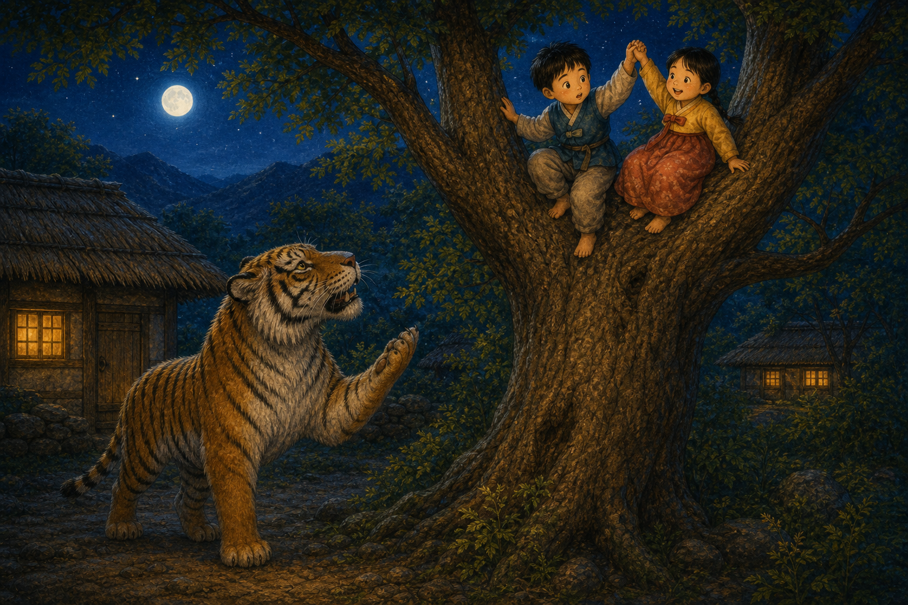
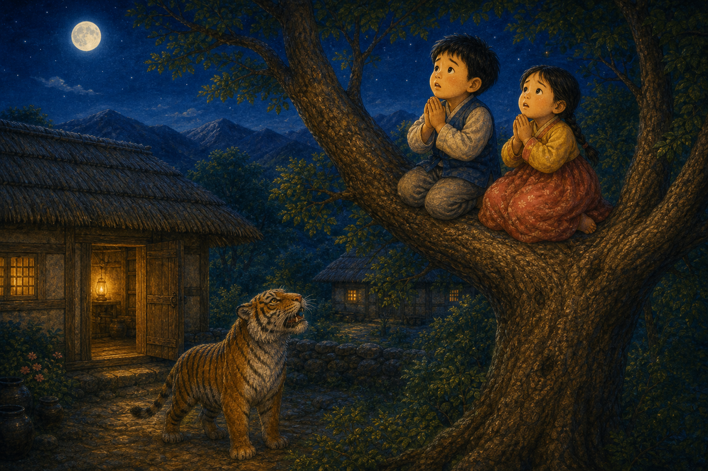
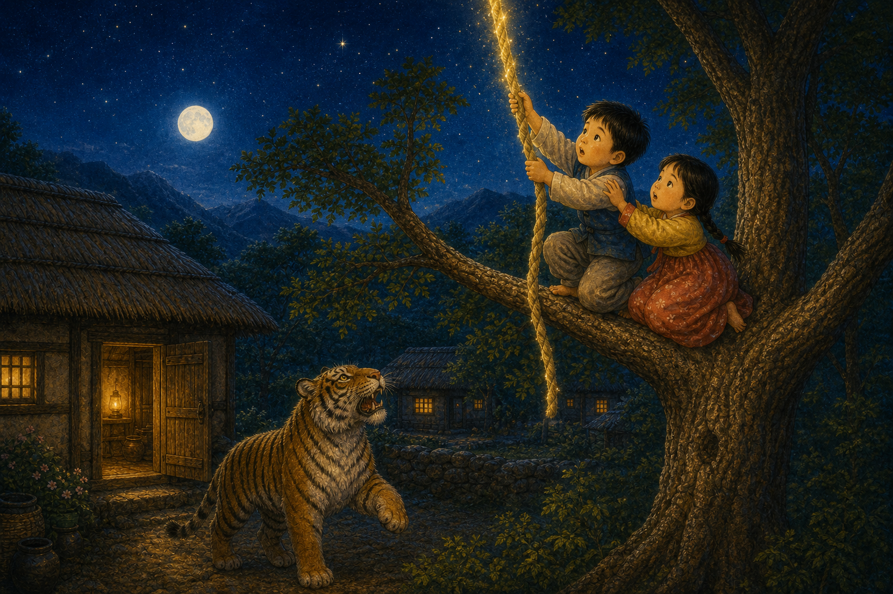
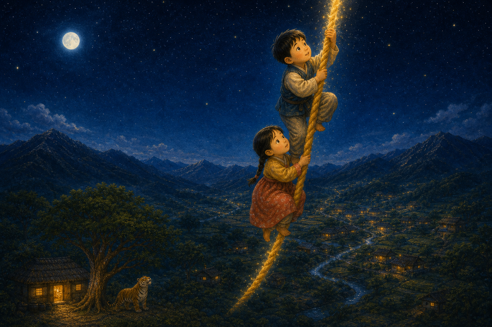
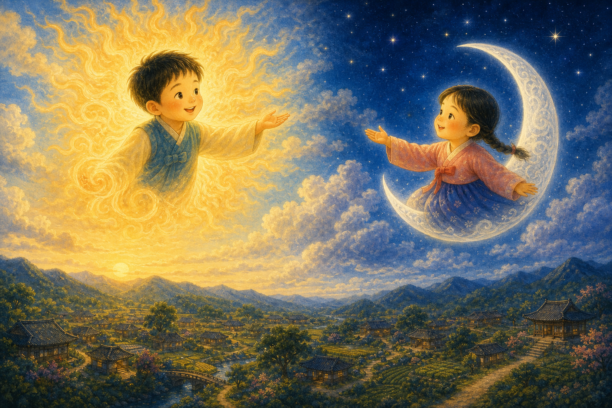
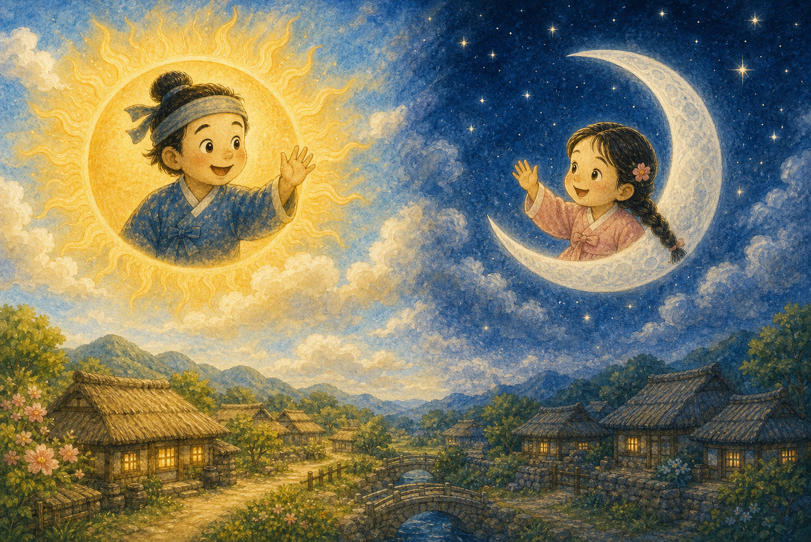

엄마를 기다리며
옛날 산골 초가집에 오빠와 여동생이 살았어요. 떡을 팔러 간 엄마를 기다리며 집을 지켰지요.
"엄마는 언제 오실까?"

옛날 산골 초가집에 오빠와 여동생이 살았어요. 떡을 팔러 간 엄마를 기다리며 집을 지켰지요.
"엄마는 언제 오실까?"

밤이 되자 문밖에서 "엄마가 왔단다" 하는 소리가 들렸어요. 하지만 목소리가 어쩐지 거칠고 무서웠지요.
"우리 엄마 목소리가 아닌데?"

오누이는 문틈으로 손을 보여 달라고 했어요. 문틈으로 들어온 손은 털이 북슬북슬한 호랑이 손이었지요.
"엄마가 아니라 호랑이잖아!"

오누이는 살그머니 뒷문으로 빠져나와 큰 나무 위로 올라갔어요. 침착하게 위기를 피한 거예요.
"조용히, 높은 곳으로 올라가자."

호랑이는 나무 아래에서 오누이를 올려다보았어요. 어떻게 올라갔냐며 자꾸 물었지요.
오누이는 두 손을 꼭 잡았어요.

오누이는 하늘을 향해 간절히 빌었어요. 도와달라는 마음을 담아 두 손을 모았지요.
"하늘님, 우리를 도와주세요."

그러자 하늘에서 튼튼한 동아줄이 스르르 내려왔어요. 오누이는 줄을 꼭 잡고 하늘로 올라갔지요.
"꽉 잡아, 같이 올라가자!"

오누이는 동아줄을 타고 점점 하늘 높이 올라갔어요. 무서운 호랑이에게서 멀어질 수 있었지요.
"이제 안전해, 다행이야!"

하늘에 오른 오빠는 해가 되고, 여동생은 달이 되었어요. 둘은 서로를 지키며 하늘을 밝혔지요.
"내가 낮을 비출게, 너는 밤을 비춰."

그래서 낮에는 해가, 밤에는 달이 세상을 비춘답니다. 차분한 마음과 서로를 아끼는 마음이 오누이를 지켜 주었지요.
"우리는 늘 하늘에서 함께야."